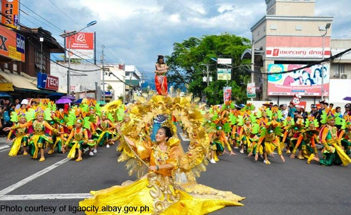
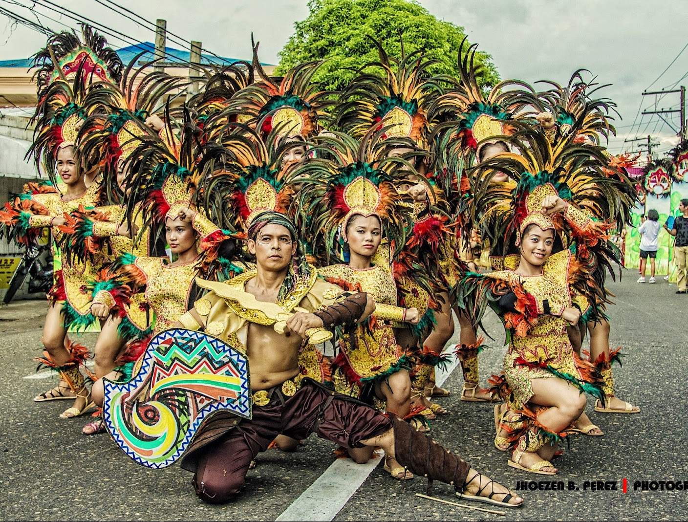
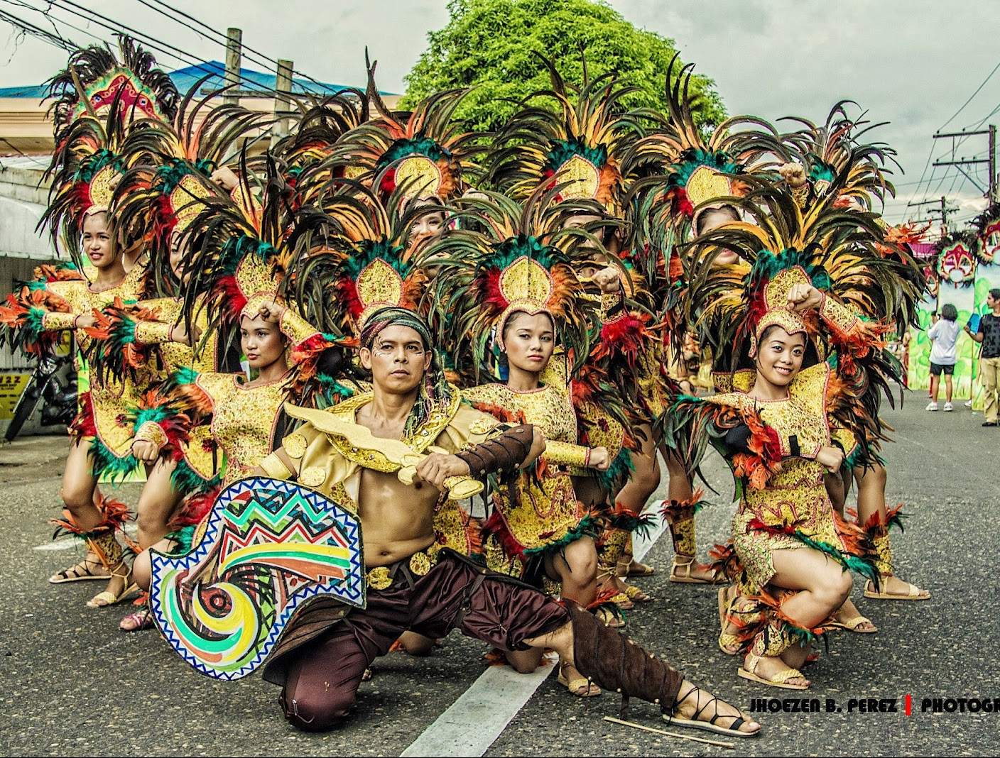
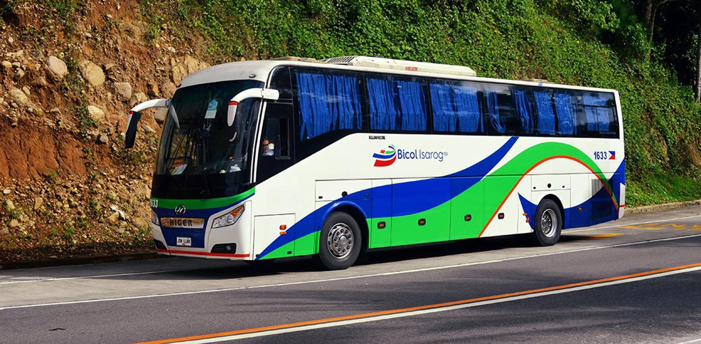

6 Things To Do
When in Albay
To make the most out of your time in Legazpi City, here is a suggested itinerary for 3 days and 2 nights stay.
Sample Itinerary
Day 1: Arrival & City Tour
- 07:00 AM - ETA at Legazpi City
- 08:00 - 09:00 AM - Visit Peñaranda Park and Cathedral of St. Gregory the Great
- 09:30 - 11:00 AM - Visit Albay Astrodome and Legazpi Boulevard
- 11:00 - 12:00 NN - Lunch at Legazpi Boulevard
- 01:00 PM - Hotel check-in
- 01:30 - 02:30 PM - Free Time
- 02:30 - 05:00 PM - Visit Embarcadero de Legazpi, Try the zipline and check out the shops.
- 05:00 - 06:00 PM - Dinner at Embarcadero de Legazpi
Day 2: Nature Park
- 07:00 AM - Breakfast
- 08:00 - 09:30 AM - Visit Sumlang Lake
- 10:00 - 12:00 NN - Boat Riding
- 12:00 - 01:00 PM - Lunch
- 01:30 - 03:00 PM - Go back to the hotel and rest
- 03:00 - 05:00 PM - Visit the Japanese Tunnels
- 05:00 - 06:00 PM - Dinner
Day 3: Sightseeing & ATV Tour
- 07:00 AM - Wake up. Have breakfast
- 08:30 - 11:30 AM - Visit Daraga Church and Cagsawa Ruins
- 12:00 NN - Lunch
- 01:00 - 2:00 PM - Visit the Mayon Volcano National Park
- 03:00 - 4:00 PM - Go on an ATV Tour
- 05:00 PM - Early dinner
- 06:00 PM - ETD Legazpi City to Manila
Best Time To Go There


Legazpi City has a tropical rainforest climate and experiences a considerable amount of rainfall every year. January is the coolest month while May and June are the hottest months.
Summer Season | March to May

Weather-wise, the best time to visit is during the summer months between March through May.
This way, you can make the most out of the many outdoor activities available. If you wish to experience the Ibalong Festival though, you should visit when it happens in August.
How to Get There?
Legazpi is known as the gateway to Bicol because of its central location in the region. The city is also very accessible. You can choose among various modes of transportation via land and air.
By Flights

Air travel is the fastest and most convenient way to get to Legazpi City. Travel time usually takes 55 minutes to 1 hour. The Legazpi Domestic Airport is the busiest non-international airport in Luzon and has daily flights to and from Manila. Alternatively, you can also catch a one-hour flight to Legazpi from Cebu via Philippine Airlines and Cebu Pacific.
Traveling to Albay by Bus
You can take either an air-conditioned or non-air-conditioned bus from Manila to Legazpi City and vice versa. There are several bus liners that schedule daily trips to the city.

There are different bus stations or points of origin in Manila depending on which bus liners you choose. You can ride a bus from any of these points: Araneta Center Bus Station, EDSA-Cubao, LRT-Buendia via EDSA-Pasay, Ermita or Alabang. All these buses will take you to the Legazpi Grand Central Terminal. Travel time is usually between 9 - 12 hours.